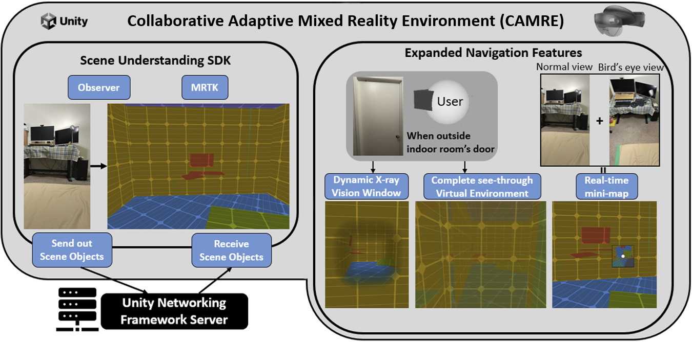

Hung-Jui Guo, Omeed Eshaghi Ashtiani and Balakrishnan Prabhakaran
Submitted to: IEEE VR 2024, currently under review.
In this paper, we describe a single-device system called Collaborative Adaptive Mixed Reality Environment (CAMRE). We build CAMRE using the scene understanding capabilities of HoloLens 2 devices to create shared MR virtual environments for each connected user and demonstrate using a Leader-Follower(s) paradigm: faster reconstruction and scene update times due to smaller data. Consequently, multiple users can receive shared, synchronized, and close-to-real-time latency virtual scenes from a chosen Leader, based on their physical position and movement. We also illustrate other expanded features of CAMRE MR virtual environment such as navigation using a real-time virtual mini-map and X-ray vision for handling adaptive wall opacity. We share several experimental results that evaluate the performance of CAMRE in terms of the network latency in sharing virtual objects and other capabilities.

Hung-Jui Guo, Laura R. Marusich, Jonathan Z. Bakdash, Shulan Lu, Andrew M. Tague, Reynolds, J. Ballotti, Derek Harter, Omeed Eshaghi Ashtiani and Balakrishnan Prabhakaran
Submitted to: IEEE Transactions on Visualization and Computer Graphics (TVCG), currently under review.
The current research reported a behavioral experiment with 59 participants that manipulated the color, luminance, and rendered distance of virtual objects in a Hololens 2 MR environment. The experiment examined the effects of these three variables on the human depth perception of the virtual objects. Results indicated that objects with cool colors (green and blue) tended to be perceived closer than objects with warm colors (red and yellow). Objects with high luminance tended to be perceived closer than low luminance ones. This is a unique result compared to previous related MR works.
Hung-Jui Guo, Jonathan Z. Bakdash, Laura R. Marusich and Balakrishnan Prabhakaran
Published at: IEEE Conference on Virtual Reality and 3D User Interfaces 2023.
In this paper, we utilized the MR Head-Mounted Device (HMD) -- HoloLens 2 to build a virtual environment and a dynamic X-Ray vision window based on the created environment. Unlike the previous works, our system allows users to physically move and still have the X-Ray vision ability in real-time, providing depth cues and additional information in the surrounding environment. On top of it, we designed an experiment and recruited multiple participants as proof of concept for our system's ability.
Hung-Jui Guo, Jonathan Z. Bakdash, Laura R. Marusich and Balakrishnan Prabhakaran
Published at: Virtual Reality Software and Technology (VRST) 2022.
Current citation number: 1
In this paper, we demonstrate a dynamic X-ray vision window that is rendered in real-time based on the user's current position and changes with movement in the physical environment. Moreover, the location and transparency of the window are also dynamically rendered based on the user's eye gaze. We build this X-ray vision window for a current state-of-the-art MR Head-Mounted Device (HMD) -- HoloLens 2 by integrating several different features: scene understanding, eye tracking, and clipping primitive.

Hung-Jui Guo, Jonathan Z. Bakdash, Laura R. Marusich and Balakrishnan Prabhakaran
Published at: IEEE Transactions on Instrumentation and Measurement (TIM), Impact Factor: 5.332.
Current citation number: 1
In this paper, we survey 87 environmental-related HMD papers with measurements from users, spanning over 32 years. We provide a thorough review of AR- and MR-related user experiments with HMDs under different environmental factors. Then, we summarize trends in this literature over time using a new classification method with four environmental factors, the presence or absence of user feedback in behavioral experiments, and ten main categories to subdivide these papers (e.g., domain and method of user assessment). We also categorize characteristics of the behavioral experiments, showing similarities and differences among papers.
Yu-Yen Chung, Hung-Jui Guo, Hiranya Garbha Kumar and Balakrishnan Prabhakaran
Published at: 2020 IEEE International Conference on Artificial Intelligence and Virtual Reality (AIVR). (2020)
Current citation number: 1
We created a Mixed Reality game using several RGB-D cameras to capture users' motion and texture onto the 3D human avatar in virtual environments. This game aims to exercise and relieve the pain of Phantom Pain. (Please read the abstract to find further information)
My main contribution to this paper is to transfer the texture from the frame to the image and mirror the texture to the missing limb.
Wei-Ta Chu and Hung-Jui Guo
Published at: Workshop on Multimodal Understanding of Social, Affective and Subjective Attributes. (2017)
Current citation number: 65
We used movie posters as information to train the neural network model to help classify multiple movie genres. This work is a multi-label task that sets the movie classification foundation by using movie posters.
My main contribution to this work is collecting a large-scale movie poster dataset and building a custom neural network to classify movie genres by using the dataset.
This paper was my main research topic during my Master's degree.

More info on Google scholar